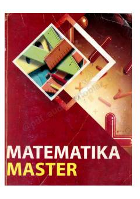

MMMatematika fanidan abituriyentlar uchun mo'ljallangan testlar to'plamining birinchi qismi.
Ushbu o'quv qo'llanma matematika fanidan testlar to'plami bo'lib, abituriyentlar, maktab o'quvchilari va akademik litsey o'quvchilari uchun mo'ljallangan. Kitobning birinchi qismi matematika kursining asosiy mavzularini qamrab oladi va o'quvchilarning bilim bazasini rivojlantirishga xizmat qiladi.